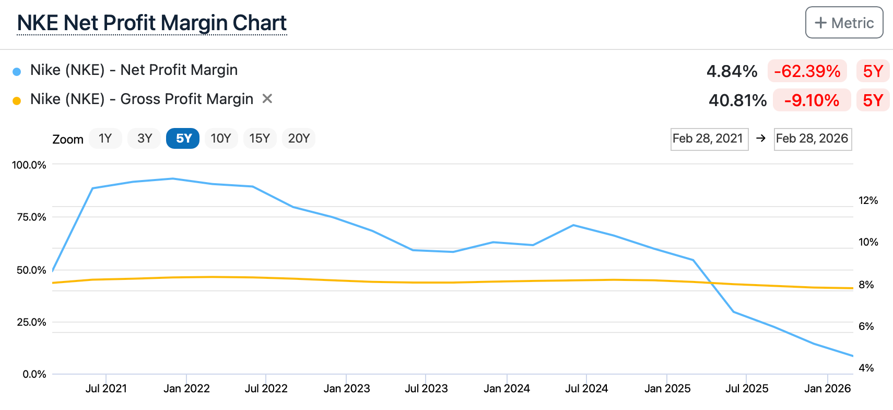
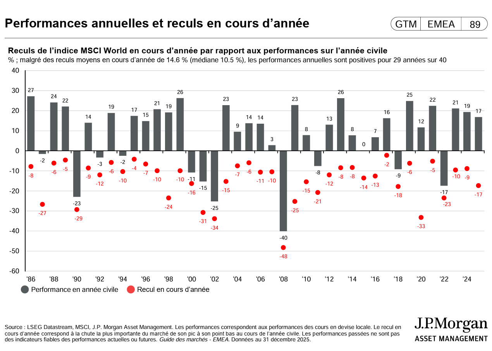

Savoir acheter la bonne entreprise au bon moment est une science mathématique et analytique. Mais savoir exactement quand s'en séparer est un véritable art psychologique. C'est sans doute la décision la plus complexe et la plus contre-intuitive de l'investissement en bourse.
Poussés par l'ego, l'impatience ou la peur de perdre leurs gains latents, l'écrasante majorité des investisseurs commettent une erreur fatale : ils coupent leurs positions gagnantes beaucoup trop tôt, et conservent leurs positions perdantes beaucoup trop longtemps en espérant secrètement qu'elles remonteront à leur prix d'achat initial. En Quality Investing, la décision de vente doit être diamétralement opposée : elle doit être binaire, froide, implacable, et totalement détachée des fluctuations du cours de l'action.
1. La psychologie de la vente : L'erreur de couper ses fleurs
Abordons d'emblée la pire raison de vendre une action : s'en séparer uniquement parce que son prix a fortement augmenté. Le légendaire gérant de fonds Peter Lynch décrivait ce comportement destructeur de performance comme le fait de "couper ses fleurs pour arroser ses mauvaises herbes".
Si vous avez eu l'intelligence d'identifier une entreprise exceptionnelle, avec un Moat profond et des dirigeants visionnaires, et que cette entreprise fait exactement ce que vous attendiez d'elle (augmenter ses parts de marché et ses bénéfices d'année en année), pourquoi diable la vendre ? Son prix monte simplement parce que sa valeur intrinsèque monte en parallèle. Ne punissez jamais une entreprise parce qu'elle réussit brillamment. L'essence même de notre stratégie est de laisser les intérêts composés faire leur travail sur des décennies. Si une position devient "trop grosse" dans votre portefeuille à cause de son succès fulgurant, nous ne la coupons pas aveuglément : nous utilisons des techniques de "rééquilibrage" que nous étudierons en détail dans le prochain chapitre (6.12).
2. Raison Valable n°1 : La fissure de l'Avantage Compétitif (Le Moat)
La première véritable raison qui doit déclencher une vente immédiate et sans état d'âme est la destruction de la partie qualitative de votre thèse d'investissement : la perte de l'avantage concurrentiel.

Un Compounder perd son Moat lorsque des changements structurels profonds (et non de simples vents contraires temporaires) menacent sa pérennité. Les signaux d'alerte rouge sont clairs :
- La disruption technologique : Un concurrent lance une innovation majeure qui rend le cœur de métier de votre entreprise obsolète (l'exemple classique de Blockbuster face au streaming, ou de Kodak face au numérique).
- La perte du "Pricing Power" : L'entreprise est obligée de baisser ses prix ou de faire des promotions massives pour maintenir ses ventes, prouvant que sa marque n'est plus perçue comme "Premium" par les consommateurs.
- Un changement de direction désastreux : Le nouveau PDG déploie très mal le capital (acquisitions hors de prix, perte de la culture d'entreprise, endettement excessif pour financer des rachats d'actions artificiels).
3. Raison Valable n°2 : La dégradation sévère des Fondamentaux
La finance obéit à une loi mathématique stricte : la détérioration de la partie qualitative d'une entreprise (son Moat) finit toujours par se traduire de manière visible dans la partie quantitative (ses états financiers). Les deux sont indissociables. Si le château est attaqué, les réserves d'or s'épuisent rapidement.
Vous devez acter la vente si vous observez une compression durable et structurelle des métriques clés de rentabilité que nous avons analysées au Module 5. Une mauvaise année macroéconomique est acceptable, mais une tendance baissière sur 3 ou 5 ans est une preuve de déclin.

Ces signaux quantitatifs imposent une réévaluation drastique (et souvent une vente) :
- L'effondrement chronique du Free Cash Flow : L'entreprise consomme plus d'argent qu'elle n'en génère de manière systémique, détruisant la valeur pour l'actionnaire.
- La détérioration du bilan comptable : L'explosion incontrôlée de la dette à court terme transforme une entreprise solide en un château de cartes vulnérable aux cycles économiques.
- La destruction de la rentabilité des capitaux (ROIC) : L'entreprise continue d'investir des milliards de dollars en Recherche & Développement ou en marketing, mais ces investissements ne produisent plus aucun rendement additionnel.
4. L'Exception Stratégique : Vendre pour un "Meilleur Coût d'Opportunité"
Il existe une unique exception à la règle absolue de l'investisseur buy-and-hold. Même si une entreprise de votre portefeuille se porte bien et que son Moat reste parfaitement intact, il peut s'avérer rationnel de s'en séparer. Pourquoi ? À cause du coût d'opportunité.
Imaginez que vous ayez déniché une opportunité d'investissement nettement supérieure : un leader mondial avec un Moat encore plus large, dont la valorisation vient de subir un krach totalement irrationnel. Si votre poche de liquidités (votre Dry Powder) est vide, vous êtes coincé. Dans ce cas très précis, vendre une entreprise mature de votre portefeuille — qui a déjà délivré une grande partie de sa performance historique — pour réallouer ce capital vers la "pépite de la décennie" est une décision tactique brillante. L'objectif global de la gestion de portefeuille est de toujours orienter votre capital vers l'asymétrie de rendement la plus explosive.
5. L'Humilité de l'Investisseur : L'Erreur de la Thèse Initiale
Parfois, l'entreprise n'a pas fondamentalement changé... C'est simplement notre analyse de départ qui était complètement fausse. L'investissement est un art probabiliste, et en tant qu'humains, nous sommes faillibles. Vous pouvez avoir surestimé la puissance d'une marque, mal calculé la valeur intrinsèque (Fair Value), ou totalement sous-estimé l'intensité de la concurrence sur un secteur d'activité.
Si vous réalisez au fil du temps que votre thèse initiale reposait sur des hypothèses erronées, il faut vendre. Immédiatement.
La plus grande erreur destructrice de richesse à ce stade est de tomber dans le Biais d'ancrage (Anchoring Bias). C'est cette petite voix insidieuse dans votre tête qui murmure : "L'action affiche -20% dans mon portefeuille, je refuse d'acter la perte. Je vais la garder patiemment jusqu'à ce qu'elle remonte à mon prix d'achat pour la vendre à l'équilibre."
C'est une absurdité mathématique. Le marché ne sait pas à quel prix vous avez acheté cette action, et il s'en moque éperdument. Si votre thèse est fausse, vendez. Acceptez la perte, libérez votre capital, et réinvestissez cet argent dans un véritable "Compounder" qui travaillera pour vous.
6. La Friction Fiscale (Le Tax Drag) : L'ennemi invisible de la vente
Si les chapitres précédents ne vous ont pas encore convaincu de garder vos bonnes actions le plus longtemps possible, voici une raison mathématique et financière implacable : la friction fiscale (le Tax Drag).
Chaque fois que vous vendez une action gagnante simplement pour "prendre vos profits", vous déclenchez un événement fiscal immédiat qui ampute sévèrement votre capital. Ce capital qui part en impôts ne pourra plus jamais produire d'intérêts composés pour vous dans le futur.
(Avertissement : Je ne suis ni expert-comptable ni avocat fiscaliste. La fiscalité est un domaine complexe qui peut évoluer rapidement. Il est impératif de vérifier les lois en vigueur ou de consulter un professionnel pour votre situation personnelle).
Prenons des exemples concrets pour illustrer l'impact massif de la fiscalité :
- En France 🇫🇷 : La fiscalité par défaut sur les plus-values boursières (hors enveloppe fiscale avantageuse comme le PEA) est soumise au Prélèvement Forfaitaire Unique (PFU) dit "Flat Tax". Ce taux s'élève à 30 % au total (comprenant 12,8 % d'impôt sur le revenu et 17,2 % de prélèvements sociaux). Cela signifie que vendre une action gagnante vous ampute instantanément de près d'un tiers de vos profits bruts ! Une fine consolation réside dans le fait que l'administration fiscale française permet de déduire vos moins-values des plus-values de même nature réalisées au cours de la même année ; l'éventuel excédent de perte restant reportable pour les 10 années suivantes.
- En Belgique 🇧🇪 : La donne est en train de changer de manière très significative. Historiquement perçue comme un eldorado fiscal pour les investisseurs "en bon père de famille" concernant les plus-values boursières, la législation a évolué. Notamment, avec les nouvelles réformes en vigueur, les moins-values réalisées à partir du 1er janvier 2026 pourront désormais être déduites des plus-values réalisées au cours de la même année. C'est l'introduction d'un mécanisme de compensation qui rapproche la Belgique des standards de ses pays voisins.
Quel que soit votre pays de résidence, la leçon magistrale reste inchangée : retarder l'imposition en conservant vos titres de qualité le plus longtemps possible (le "report d'imposition latent") est l'un des leviers d'enrichissement les plus puissants en bourse. Vendre fréquemment vous appauvrit inévitablement sur le moment.
7. Le piège de la Volatilité : Ne vendez jamais pendant une correction
Il est vital de faire la distinction ultime entre un "risque fondamental" (l'entreprise perd ses clients et va faire faillite) et la "volatilité" (le marché tout entier baisse de 15% car les investisseurs ont peur de l'inflation). Vendre une entreprise magnifique de classe mondiale simplement parce que le marché global subit une correction est une erreur impardonnable.
Les marchés financiers sont, par nature, volatils à court terme. Les baisses ne sont pas des anomalies, ce sont les "frais d'entrée" que vous devez payer émotionnellement pour accéder à la performance exceptionnelle des actions sur le long terme.

Ce graphique est la preuve irréfutable que la volatilité intra-annuelle est inévitable. Si vous vendez vos actions de qualité sous l'effet de la panique à chaque fois qu'un point rouge apparaît sur ce graphique (une baisse de 10% ou 15% au printemps ou à l'automne), vous vous privez systématiquement des puissantes barres grises (les rendements positifs en fin d'année). En Quality Investing, une baisse générale des marchés n'est jamais un signal de vente, c'est une formidable opportunité d'achat pour renforcer ses positions (comme vu au chapitre 6.10).
8. La Règle Ultime : La Conviction face à la Baisse
Pour résumer toute cette philosophie, voici la règle ultime qui doit guider vos décisions : ne vendez jamais tant que vous croyez fondamentalement en l'entreprise. Une baisse du cours de l'action de 10 %, 20 % ou même 40 % ne veut absolument rien dire si les fondamentaux restent solides et que le Moat est toujours en place.
Le marché boursier est un outil de transfert de richesse des investisseurs impatients vers les investisseurs patients. Lorsque vous voyez votre position dans le rouge, votre premier réflexe ne doit pas être d'ouvrir votre courtier pour vendre, mais d'ouvrir les rapports financiers de l'entreprise. L'entreprise continue-t-elle de générer du cash ? Ses produits sont-ils toujours demandés par les consommateurs ? Ses avantages concurrentiels sont-ils intacts ? Si la réponse est oui, alors votre conviction doit rester inébranlable et totale. Le prix finira toujours, à long terme, par s'aligner mathématiquement sur la valeur réelle de l'entreprise. Ne laissez pas la panique ambiante ou l'irrationalité des autres investisseurs dicter vos propres décisions d'investissement.
🔑 Ce qu'il faut retenir
La décision de vendre une position ne doit jamais, au grand jamais, être dictée par les fluctuations émotionnelles du cours de l'action ou par le bruit macroéconomique. Ne coupez pas vos entreprises gagnantes simplement pour le plaisir de sécuriser des profits et de déclencher inutilement une imposition fiscale pénalisante.
La vente ne s'envisage que dans des cas froids et analytiques : la thèse a changé (l'entreprise perd son Moat ou ses fondamentaux s'effondrent), la thèse était fausse dès le départ, ou un meilleur coût d'opportunité s'est présenté. Si l'entreprise reste exceptionnelle et que vous croyez en ses fondamentaux, fermez votre application de courtage, encaissez la volatilité avec philosophie, et laissez vos intérêts composés opérer en paix.